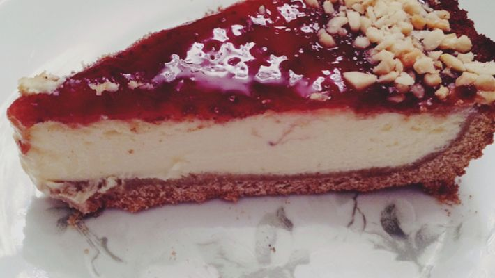

Cheesecake

Preparo
60 min
Rendimento
10 porções
Favoritos
49
Ingredientes
- 1 pacote de bolacha maizena
- 100 g de manteiga ou margarina derretida
- 450 g de cream cheese
- 1 lata de leite condensado
- 3 ovos
- 250 g de geleia de morango
Modo de preparo
- Para a massa, triture as bolachas em um processador.
- Adicione a manteiga/margarina e bata novamente até formar uma massa.
- Espalhe essa massa em uma forma redonda e com fundo removível (untada), reserve.
- Para o recheio, bata bem no liquidificador o cream cheese, o leite condensado e os ovos.
- Despeje essa mistura sobre a massa reservada.
- Leve ao forno preaquecido a 180°C por 30 minutos.
- Retirar a torta do forno e quando ela já estiver fria, espalhe a geleia de morango sobre a superfície.
- Se desejar, decore com morangos a gosto.
- Leve para gelar por pelo menos 3 horas.
- Desenforme e sirva.